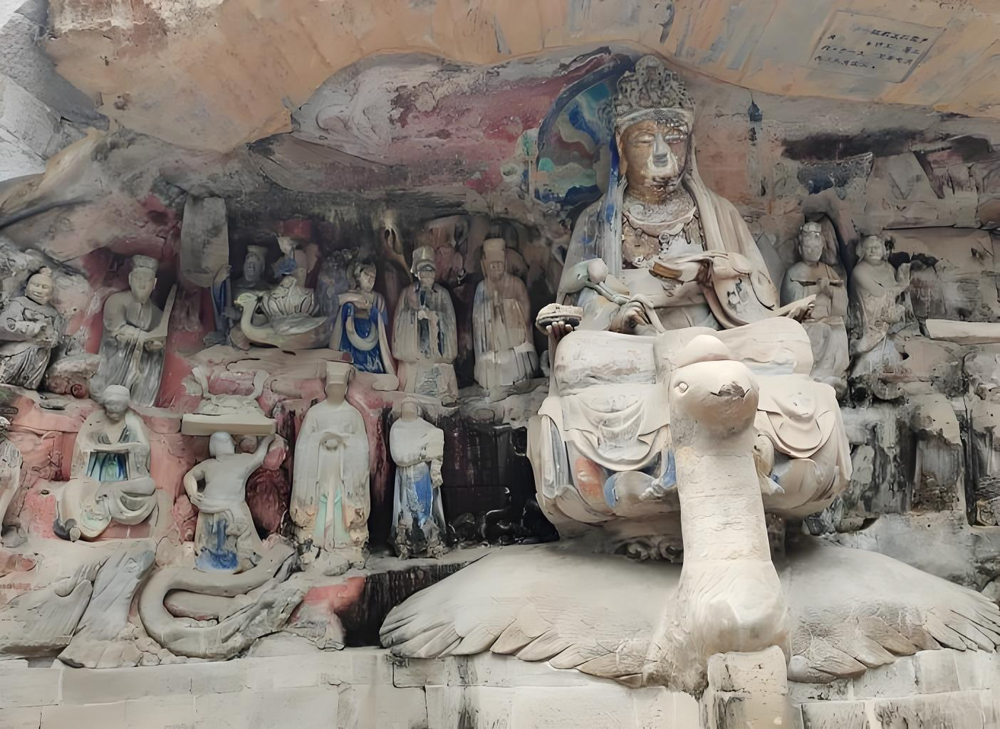
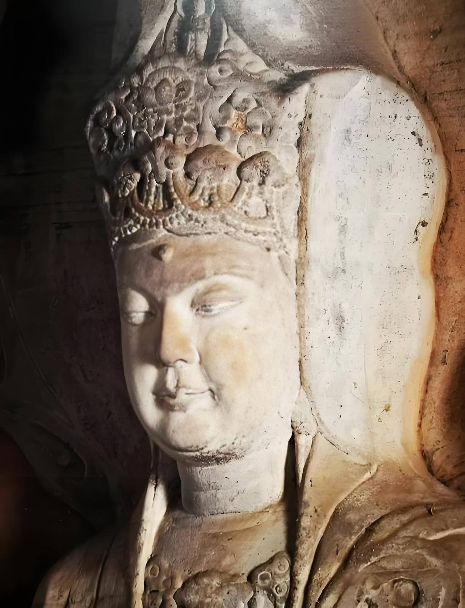
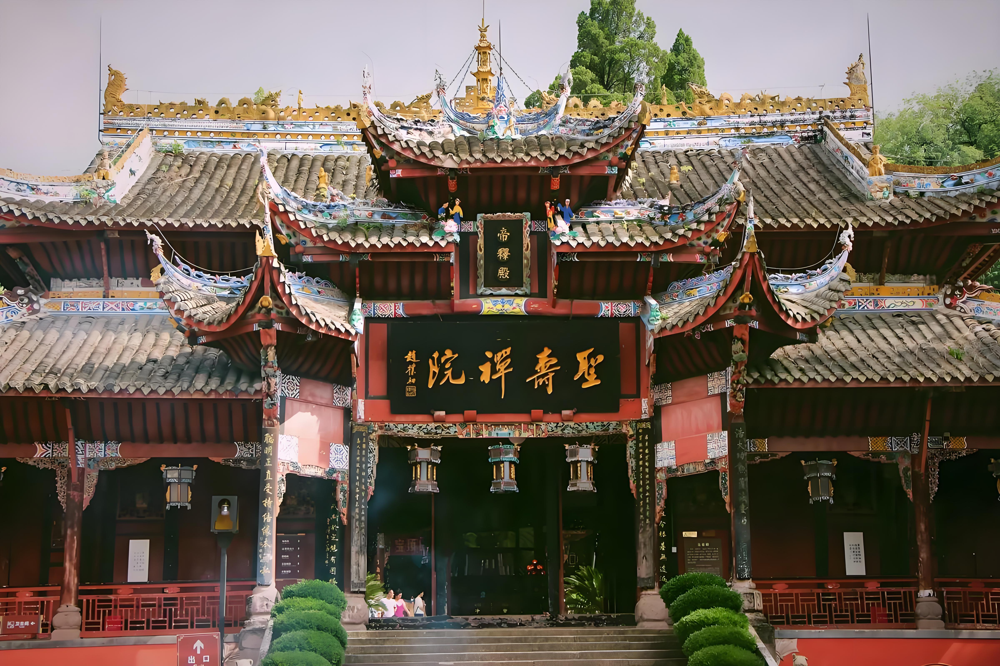

DAZU ROCK CARVINGS
Carved between the 9th and 13th centuries on limestone cliffs around the Dazu County, these rock carvings represent the pinnacle of Chinese Buddhist art. Spread across 75 sites with over 50,000 statues, they blend Buddhism, Taoism, and Confucianism into stunning visual narratives.
The Beishan section features exquisite carvings of Guanyin, the goddess of compassion, including the famous Thousand-Hand Guanyin statue. The Bao'en Palace showcases dramatic scenes of hell, with vivid depictions of punishment and redemption that reflect Buddhist beliefs about karma.
What sets these carvings apart is their unique combination of religious themes and everyday life scenes. Farmers, merchants, and officials appear alongside deities, reflecting the Buddhist belief that enlightenment can be found in ordinary human experience. The carvings were designated a UNESCO World Heritage Site in 1999.


